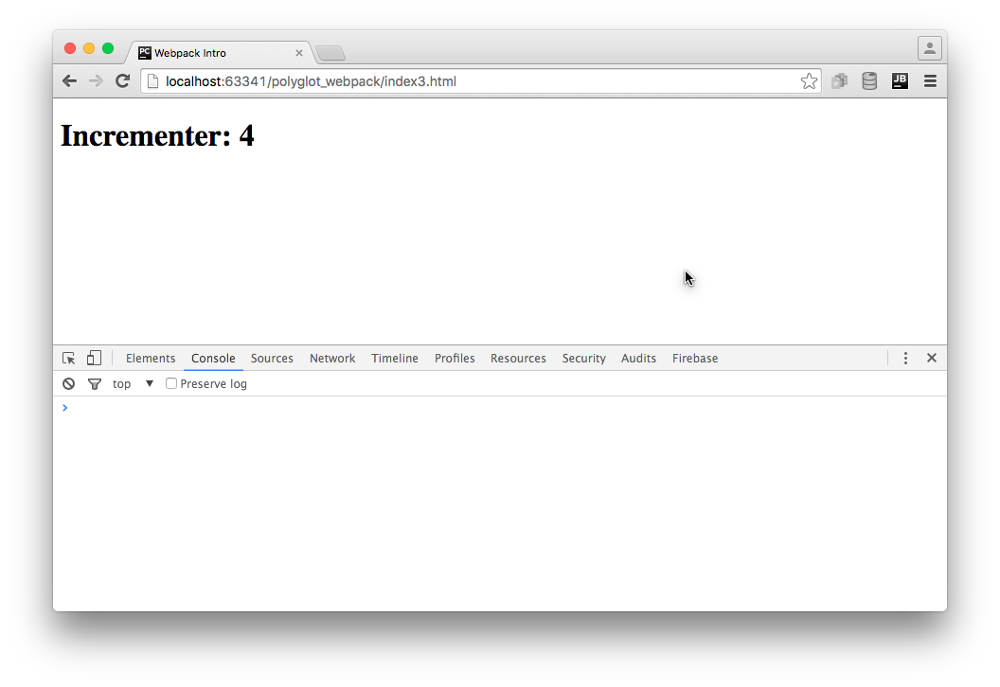

Browser Bundling with Webpack¶
In our progress towards browserless, modular TDD, we wound up a spot where…we can’t run in a browser! Since browsers don’t currently support modules, and certainly not CommonJS modules, we need a way to transform our code into a browser-friendly format.
In this section we look at using Webpack to bundle our modular, CommonJS code into a single file fit for the browser. Along the way, we also reduce our HTTP requests by bundling our dependencies into the same file.
Finally, we end in a super spot: we switch to using Webpack’s development server, which re-bundles in-memory on every change and automatically updates your browser, hands-free.
Overview¶
- Show problem with using modules in a browser without a module loader
- Introduce and install Webpack
- Generate and use a bundle, including with external dependency
- Show live bundling and reloading with
webpack-dev-server
The Problem¶
Let’s write a small web application, based around the incrementer in
ES6 Imports with Babel. First, an index1.html file:
<!DOCTYPE html>
<html>
<head>
<title>Webpack Intro</title>
</head>
<body>
<h1>Incrementer</h1>
<script src="app1.js"></script>
</body>
</html>
This loads a file app1.js:
var incrementer = require('./lib');
console.log(incrementer(3));
…which uses CommonJS modules to import incrementer from ./lib.js:
function incrementer (i) {
return i+1;
}
module.exports = incrementer;
PyCharm makes this easy to run. In the editor tab for index1.html,
mouse-over the symbol for one of the browsers and click it to open in
the internal PyCharm webserver:
As the screenshot shows, the browser console tells us we have a JavaScript
error Uncaught ReferenceError: require is not defined. Not surprising:
browsers don’t support CommonJS export/import and modules, so require
is not available in a browser.
We need a module bundler. We’ll use Webpack.
Installation¶
Our goal is to take all of our Node-style, browserless, modular code
and combine it into a single bundle.js file, including jQuery as
a dependency. Let’s use npm to install Webpack (and its development
server) as a development dependency:
$ npm install --save-dev webpack webpack-dev-server
We can now run Webpack to “bundle” our files together:
$ node_modules/.bin/webpack app1.js -o bundle.js
With this command, Webpack looks in app1.js for any require
imports, then in any of those imported files for more imports, and
bundles all the files into a single output file called bundle.js.
If we change our HTML to point at this bundle.js file:
<!DOCTYPE html>
<html>
<head>
<title>Webpack Intro</title>
</head>
<body>
<h1>Incrementer</h1>
<script src="bundle.js"></script>
</body>
</html>
…then we can see 4 in the browser console with no errors:
Note
What is the bundle.js.map file that got generated? Bundlers
have a habit of making the tracebacks hard to follow back to
the original line in the original file. The “source map”
contains all the extra information needed for this. It is only
loaded when the browser has the console window open for
debugging. This source map can also be inlined into the
bundle.js instead of into a separate file.
Including Library Code¶
Imagine our frontend application used jQuery. In this case, included
via a <script> that pointed at a CDN:
<!DOCTYPE html>
<html>
<head>
<title>Webpack Intro</title>
</head>
<body>
<h1>Incrementer</h1>
<script src="https://cdnjs.cloudflare.com/ajax/libs/jquery/2.2.0/jquery.js"></script>
<script src="bundle.js"></script>
</body>
</html>
Instead of logging the incrementer value to the console, we might
use jQuery to save it to the <h1> text node:
$(document).ready(function () {
var incrementer = require('./lib');
var newVal = incrementer(3);
$('h1').text('Incrementer: ' + newVal);
});
After re-bundling, this works fine in our browser:
However, we’re not doing anything that feels like Pythonic development:
- Record a dependency on a version of jQuery
- Import jQuery into our application, rather than expecting it to
magically appear as a global via
<script>
Plus, we are making an extra HTTP request to get jQuery. Wouldn’t it be great if our frontend toolchain helped us manage this?
First we use npm to install jQuery as a dependency:
$ npm install --save jquery
This gets the code into node_modules and adds an entry in
package.json. We now need to import it into our application code:
var $ = require('jquery');
$(document).ready(function () {
var incrementer = require('./lib');
var newVal = incrementer(3);
$('h1').text('Incrementer: ' + newVal);
});
We can now eliminate the <script> that loads jQuery from CDN:
<!DOCTYPE html>
<html>
<head>
<title>Webpack Intro</title>
</head>
<body>
<h1>Incrementer</h1>
<script src="bundle.js"></script>
</body>
</html>
Loading index4.html in your browser via PyCharm shows this still
works. How did jQuery get in there? Webpack saw it imported, fetched
it, and included it.
We now have our external dependencies as part of our frontend toolchain with revision control. Not too shabby. But we can take another, very cool step forward.
Note
Why is bundle.map so big? It’s now at 270 Kb. Well, jQuery isn’t tiny. But also, we haven’t done any work to make it smaller. Webpack can “minify”, which strips out any comments and does lots of tricks for shrinking. Also, we are including the full jQuery. It is now available as multiple CommonJS submodules, so you can get only what you need. Or use a jQuery alternative.
Live Bundling and Reload¶
It is certainly not fun having to re-bundle on every change. Wouldn’t it be nice if we had a tool that watched your files, and whenever anything changed, would re-bundle? Or even better, provide a web server which not only re-bundled, but told the browser to reload the page, hands-free?
The Webpack Dev Server does just this. In fact, it doesn’t write a bundle file to disk. It keeps things in memory.
We installed it at the top of this article, so we can jump straight into using it:
$ node_modules/.bin/webpack-dev-server app3.js
As logged to your console, this starts a web server on port 8080, so you can
now load http://localhost:8080/webpack-dev-server/index4.html. You
should see:
Now, every time you make a change, the bundle will be regenerated and the browser will reload the page. It’s a seemingly-small, but in practice huge, change in frontend development.
To make this more natural in PyCharm, we can first move the Webpack command
line options to a config file. By default, Webpack looks in
webpack.config.js in the project roo:
module.exports = {
entry: './app1.js',
output: {
path: __dirname,
filename: 'bundle.js'
},
devtool: 'source-map'
};
We put in the options to drive both webpack and webpack-dev-server.
Next, let’s automate this task by adding an npm run script in
package.json:
{
"name": "pylyglot",
"version": "1.0.0",
"description": "Series of articles for Polyglot Python with PyCharm",
"main": "index.js",
"scripts": {
"start": "webpack-dev-server"
},
"repository": {
"type": "git",
"url": "git+ssh://git@github.com/pauleveritt/pauleveritt.github.io.git"
},
"author": "Paul Everitt",
"license": "ISC",
"bugs": {
"url": "https://github.com/pauleveritt/pauleveritt.github.io/issues"
},
"homepage": "https://github.com/pauleveritt/pauleveritt.github.io#readme",
"devDependencies": {
"webpack": "^1.12.12",
"webpack-dev-server": "^1.14.1"
},
"dependencies": {
"jquery": "^2.2.0"
}
}
Because start is a pre-defined shortcut, we can run npm start from
the command line. Or, we can let PyCharm browser our package.json’s
npm run scripts and execute start (and thus the webpack-dev-server)
in a run tool window.
Wrapup¶
That wasn’t too hard. Admittedly, that’s because this introductory article took the easiest possible course. As it turns out, bundling has a ton of functionality and also thorny issues at nearly every turn.
It’s one of the bittest pills in the frontend toolchain. On one hand, you have the chance to radically improve your productivity and get a Pythonic development cycle. On the other hand, you spend a large portion of your time learning (constantly changing) tools and fighting the problems they introduce.
There are solutions to this. If you don’t want to be bleeding edge, stick to the minimum, such as the scope in this article.